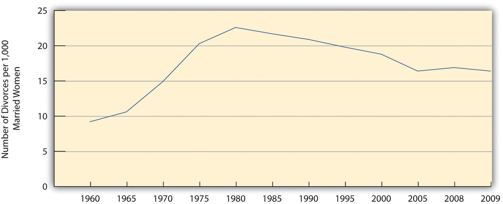
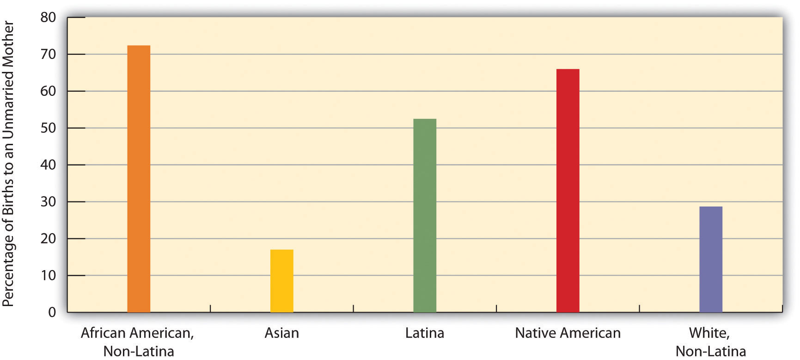

“Help for Domestic Violence Victims Declining,” the headline said. In Georgia, donations and other financial assistance to battered women’s shelters were dwindling because of the faltering economy. This decreased funding was forcing the shelters to cut back their hours and lay off employees. As Meg Rogers, the head of a shelter with a six-month waiting list explained, “We are having to make some very tough decisions.”
Reflecting her experience, shelters in Georgia had to turn away more than 2,600 women and their children in the past year because of lack of space. Many women had to return to the men who were abusing them. This situation troubled Rogers. “I think their safety is being compromised,” she said. “They may go to the abuser’s family even if they don’t go back to the abuser.” A domestic violence survivor also worried about their fate and said she owed her own life to a women’s shelter: “I love them to this day and I’m alive because of them.”
Source: Simmons, 2011Simmons, A. (2011, October 29). Help for domestic violence victims declining. The Atlanta Journal-Constitution. Retrieved from http://www.ajc.com/news/crime/help-for-domestic-violence-1212373.html.
Once upon a time, domestic violence did not exist, or so the popular television shows of the 1950s would have had us believe. Neither did single-parent households, gay couples, interracial couples, mothers working outside the home, heterosexual spouses deciding not to have children, or other family forms and situations that are increasingly common today. Domestic violence existed, of course, but it was not something that television shows and other popular media back then depicted. The other family forms and situations also existed to some degree but have become much more common today.
The 1950s gave us Leave It to Beaver and other television shows that depicted loving, happy, “traditional” families living in the suburbs. The father worked outside the home, the mother stayed at home to take care of the kids and do housework, and their children were wholesome youngsters who rarely got into trouble and certainly did not use drugs or have sex. Today we have ABC’s Modern Family, which features one traditional family (two heterosexual parents and their three children) and two nontraditional families (one with an older white man and a younger Latina woman and her child, and another with two gay men and their adopted child). Many other television shows today and in recent decades have featured divorced couples or individuals, domestic violence, and teenagers doing drugs or committing crime.
In the real world, we hear that parents are too busy working at their jobs to raise their kids properly. We hear of domestic violence as in the story from Georgia at the start of this chapter. We hear of kids living without fathers, because their parents are divorced or never were married in the first place. We hear of young people having babies, using drugs, and committing violence. We hear that the breakdown of the nuclear family, the entrance of women into the labor force, and the growth of single-parent households are responsible for these problems. Some observers urge women to work only part-time or not at all so they can spend more time with their children. Some yearn wistfully for a return to the 1950s, when everything seemed so much easier and better. Children had what they needed back then: one parent to earn the money, and another parent to take care of them full time until they started kindergarten, when this parent would be there for them when they came home from school.
Families have indeed changed, but this yearning for the 1950s falls into what historian Stephanie Coontz (2000)Coontz, S. (2000). The way we never were: American families and the nostalgia trap. New York, NY: Basic Books. calls the “nostalgia trap.” The 1950s television shows did depict what some families were like back then, but they failed to show what many other families were like. Moreover, the changes in families since that time have probably not had all the harmful effects that many observers allege. Historical and cross-cultural evidence even suggests that the Leave It to Beaver-style family of the 1950s was a relatively recent and atypical phenomenon and that many other types of families can thrive just as well as the 1950s television families did.
This chapter expands on these points and looks at today’s families and the changes they have undergone. It also examines some of the controversies and problems now surrounding families and relationships.
A familyA group of two or more people who are related by blood, marriage, adoption, or a mutual commitment and who care for one another. is a group of two or more people who are related by blood, marriage, adoption, or a mutual commitment and who care for one another. Defined in this way, the family is universal or nearly universal: Some form of the family has existed in every society, or nearly every society, that we know about (Starbuck, 2010).Starbuck, G. H. (2010). Families in context (2nd ed.). Boulder, CO: Paradigm. Yet it is also true that many types of families have existed, and the cross-cultural and historical record indicates that these different forms of the family can all “work”: They provide practical and emotional support for their members and they socialize their children.
It is important to keep this last statement in mind, because Americans until the last few decades thought of only one type of family, and that is the nuclear familyA family composed of two parents and their children living in the same household.: A married heterosexual couple and their young children living by themselves under one roof. The nuclear family has existed in most societies with which scholars are familiar. An extended familyA family in which parents, children, and other relatives live in the same household., which consists of parents, their children, and other relatives, has a nuclear family at its core and was quite common in prehistoric societies. Many one-parent families begin as (two-parent) nuclear families that dissolve upon divorce or separation or, more rarely, the death of one of the parents. In recent decades, one-parent families have become more common in the United States because of divorce and births out of wedlock, but they were actually very common throughout most of human history because many spouses died early in life and because many babies were born out of wedlock.
Although many prehistoric societies featured nuclear families, a few societies studied by anthropologists have not had them. In these societies, a father does not live with a woman after she has his child and sees them either irregularly or not at all. Despite the absence of a father and the lack of a nuclear family, this type of family arrangement seems to have worked well in these societies. In particular, children are cared for and grow up to be productive members of their societies (Smith, 1996).Smith, R. T. (1996). The matrifocal family: Power, pluralism, and politics. New York, NY: Routledge.
These examples do not invalidate the fact that nuclear families are almost universal. But they do indicate that the functions of the nuclear family can be achieved through other family arrangements. If that is true, perhaps the oft-cited concern over the “breakdown” of the 1950s-style nuclear family in modern America is at least somewhat undeserved. As indicated by the examples just given, children can and do thrive without two parents. To say this is meant neither to extol divorce, births out of wedlock, and fatherless families nor to minimize the problems they may involve. Rather, it is meant simply to indicate that the nuclear family is not the only viable form of family organization (Seccombe, 2012).Seccombe, K. (2012). Families and their social worlds (2nd ed.). Upper Saddle River, NJ: Pearson.
In fact, although nuclear families remain the norm in most societies, in practice they are something of a historical rarity: Until about a century ago, many spouses died by their mid-forties, and many babies were born out of wedlock. In medieval Europe, for example, people died early from disease, malnutrition, and other problems. One consequence of early mortality was that many children could expect to outlive at least one of their parents and thus essentially were raised in one-parent families or in stepfamilies (Gottlieb, 1993).Gottlieb, B. (1993). The family in the Western world from the black death to the industrial age. New York, NY: Oxford University Press.
During the American colonial period, different family types abounded, and the nuclear family was by no means the only type (Coontz, 1995).Coontz, S. (1995, summer). The way we weren’t: The myth and reality of the “traditional” family. National Forum: The Phi Kappa Phi Journal, 11–14. Nomadic Native American groups had relatively small nuclear families, while nonnomadic groups had larger extended families. Because nuclear families among African Americans slaves were difficult to achieve, slaves adapted by developing extended families, adopting orphans, and taking in other people not related by blood or marriage. Many European parents of colonial children died because average life expectancy was only 45 years. The one-third to one-half of children who outlived at least one of their parents lived in stepfamilies or with just their surviving parent. Mothers were so busy working the land and doing other tasks that they devoted relatively little time to child care, which instead was entrusted to older children or servants.
Moving much forward in US history, an important change in American families occurred during the 1940s after World War II ended. As men came home after serving in the military in Europe and Japan, books, magazines, and newspapers exhorted women to have babies, and babies they did have: People got married at younger ages and the birth rate soared, resulting in the now famous baby boom generation. Meanwhile, divorce rates dropped. The national economy thrived as auto and other factory jobs multiplied, and many families for the first time could dream of owning their own homes. Suburbs sprang up, and many families moved to them. Many families during the 1950s did indeed fit the Leave It to Beaver model of the breadwinner-homemaker suburban nuclear family. Following the Depression of the 1930s and the war of the 1940s, the 1950s seemed an almost idyllic decade.
Even so, less than 60 percent of American children during the 1950s lived in breadwinner-homemaker nuclear families. Moreover, many lived in poverty, as the poverty rate then was almost twice as high as it is today. Teenage pregnancy rates were about twice as high as today. Although not publicized back then, alcoholism and violence in families were common. Historians have found that many women in this era were unhappy with their homemaker roles, Mrs. Cleaver (Beaver’s mother) to the contrary, suffering from what Betty Friedan (1963)Friedan, B. (1963). The feminine mystique. New York, NY: W. W. Norton. famously called the “feminine mystique.”
During the 1960s and 1970s, women began to enter the labor force. They did so to increase their families’ incomes and to achieve greater self-fulfillment. More than 60 percent of married women with children under 6 years of age are now in the labor force, compared to less than 19 percent in 1960. At about the same time, divorce rates increased for several reasons that we examine later in this chapter. Changes in the American family had begun, and along with them various controversies and problems.
In the United States today, marriage remains an important institution. Only about 27 percent of all adults (18 or older) have never been married, 56 percent are currently married, 10 percent are divorced, and 6 percent are widowed (see Figure 10.1 "Marital Status of the US Population 18 Years of Age or Older, 2010"). Thus 72 percent of American adults have been married, whether or not they are currently married. Because more than half of the never-married people are under 30, it is fair to say that many of them will be getting married sometime in the future. When we look just at people aged 45–54, about 87 percent are currently married or had been married at some point in their lives. In a 2010 poll, only 5 percent of Americans under age 30 said they did not want to get married (Luscombe, 2010).Luscombe, B. (2010, November 18). Who needs marriage? A changing institution. Time. Retrieved from http://www.time.com/time/magazine/article/0,9171,2032116,2032100.html. These figures all indicate that marriage continues to be an important ideal in American life, even if not all marriages succeed. As one sociologist has said, “Getting married is a way to show family and friends that you have a successful personal life. It’s like the ultimate merit badge” (Luscombe, 2010).Luscombe, B. (2010, November 18). Who needs marriage? A changing institution. Time. Retrieved from http://www.time.com/time/magazine/article/0,9171,2032116,2032100.html.
Although marriage remains an important institution, two recent trends do suggest that its importance is declining for some segments of the population (Cohn, Passel, Wang, & Livingston, 2011).Cohn, D., Passel J., Wang, W., & Livingston, G. (2011). Barely half of US adults are married—a record low. Washington, DC: Pew Research Center. First, although 71 percent of adults have been married, this figure represents a drop from 85 percent in 1960. Second, education greatly affects whether we marry and stay married, and marriage is less common among people without a college degree.
Figure 10.1 Marital Status of the US Population 18 Years of Age or Older, 2010

Source: Data from US Census Bureau. (2012). Statistical abstract of the United States: 2012. Washington, DC: US Government Printing Office. Retrieved from http://www.census.gov/compendia/statab.
Recent figures provide striking evidence of this relationship. Almost two-thirds (64 percent) of college graduates are currently married, compared to less than half (47 percent) of high school graduates and high school dropouts combined. People with no more than a high school degree are less likely than college graduates to marry at all, and they are more likely to get divorced, as we shall discuss again later, if they do marry.
This difference in marriage rates worsens the financial situation that people with lower education already face. As one observer noted, “As marriage increasingly becomes a phenomenon of the better-off and better-educated, the incomes of two-earner married couples diverge more from those of struggling single adults” (Marcus, 2011).Marcus, R. (2011, December 18). The marriage gap presents a real cost. The Washington Post. Retrieved from http://www.washingtonpost.com/opinions/the-marriage-gap-presents-a-real-cost/2011/12/16/gIQAz24DzO_story.html?hpid=z3. One of the many consequences of this education gap in marriage is that the children of one-parent households are less likely than those of two-parent households to graduate high school and to attend college. In this manner, a parent’s low education helps to perpetuate low education among the parent’s children.
In several ways, the United States differs from other Western democracies in its view of marriage and in its behavior involving marriage and other intimate relationships (Cherlin, 2010; Hull, Meier, & Ortyl, 2012).Cherlin, A. J. (2010). The marriage-go-round: The state of marriage and the family in America today. New York, NY: Vintage; Hull, K. E., Meier, A., & Ortyl, T. (2012). The changing landscape of love and marriage. In D. Hartmann & C. Uggen (Eds.), The contexts reader (2nd ed., pp. 56–63). New York, NY: W. W. Norton. First, Americans place more emphasis than their Western counterparts on the ideal of romantic love as a basis for marriage and other intimate relationships and on the cultural importance of marriage. Second, the United States has higher rates of marriage than other Western nations. Third, the United States also has higher rates of divorce than other Western nations; for example, 42 percent of American marriages end in divorce after fifteen years, compared to only 8 percent in Italy and Spain. Fourth, Americans are much more likely than other Western citizens to remarry once they are divorced, to cohabit in short-term relationships, and, in general, to move from one intimate relationship to another, a practice called serial monogamy. This practice leads to instability that can have negative impacts on any children that may be involved and also on the adults involved.
The US emphasis on romantic love helps account for its high rates of marriage, divorce, and serial monogamy. It leads people to want to be in an intimate relationship, marital or cohabiting. Then when couples get married because they are in love, many quickly find that passionate romantic love can quickly fade; because their expectations of romantic love were so high, they become more disenchanted once this happens and unhappy in their marriage. As sociologist Andrew J. Cherlin (2010, p. 4)Cherlin, A. J. (2010). The marriage-go-round: The state of marriage and the family in America today. New York, NY: Vintage observes, “Americans are conflicted about lifelong marriage: they value the stability and security of marriage, but they tend to believe that individuals who are unhappy with their marriages should be allowed to end them.” Still, the ideal of romantic love persists even after divorce, leading to remarriage and/or other intimate relationships.
The United States has about 36 million families with children under 18. About 70 percent of these are married-couple families, while 30 percent (up from about 14 percent in the 1950s) are one-parent families. Most of these latter families are headed by the mother (see Figure 10.2 "Family Households with Children under 18 Years of Age, 2010").
Figure 10.2 Family Households with Children under 18 Years of Age, 2010

Source: Data from US Census Bureau. (2012). Statistical abstract of the United States: 2012. Washington, DC: US Government Printing Office. Retrieved from http://www.census.gov/compendia/statab.
The proportion of families with children under 18 that have only one parent varies significantly by race and ethnicity: Latino and African American families are more likely than white and Asian American households to have only one parent (see Figure 10.3 "Race, Ethnicity, and Percentage of Family Groups with Only One Parent, 2010"). Similarly, whereas 30 percent of all children do not live with both their biological parents, this figure, too, varies by race and ethnicity: about 61 percent of African American children, 15 percent of Asian children, 33 percent of Latino children, and 23 percent of non-Latino white children.
Figure 10.3 Race, Ethnicity, and Percentage of Family Groups with Only One Parent, 2010

Source: Data from US Census Bureau. (2012). Statistical abstract of the United States: 2012. Washington, DC: US Government Printing Office. Retrieved from http://www.census.gov/compendia/statab.
We will discuss several other issues affecting children later in this chapter. But before we move on, it is worth noting that children, despite all the joy and fulfillment they so often bring to parents, also tend to reduce parents’ emotional well-being. As a recent review summarized the evidence, “Parents in the United States experience depression and emotional distress more often than their childless adult counterparts. Parents of young children report far more depression, emotional distress and other negative emotions than non-parents, and parents of grown children have no better well-being than adults who never had children” (Simon, 2008, p. 41).Simon, R. W. (2008). The joys of parenthood, reconsidered. Contexts, 7(2), 40–45.
Children have these effects because raising them can be both stressful and expensive. Depending on household income, the average child costs parents between $134,000 and $270,000 from birth until age 18. College education obviously can cost tens of thousands of dollars beyond that. Robin W. Simon (2008)Simon, R. W. (2008). The joys of parenthood, reconsidered. Contexts, 7(2), 40–45. argues that American parents’ stress would be reduced if the government provided better and more affordable day care and after-school options, flexible work schedules, and tax credits for various parenting costs. She also thinks that the expectations Americans have of the joy of parenthood are unrealistically positive and that parental stress would be reduced if expectations became more realistic.
Sociological views on today’s families and their problems generally fall into the functional, conflict, and social interactionist approaches introduced in Chapter 1 "Understanding Social Problems". Let’s review these views, which are summarized in Table 10.1 "Theory Snapshot".
Table 10.1 Theory Snapshot
| Theoretical perspective | Major assumptions |
|---|---|
| Functionalism | The family performs several essential functions for society. It socializes children, it provides emotional and practical support for its members, it helps regulate sexual activity and sexual reproduction, and it provides its members with a social identity. Family problems stem from sudden or far-reaching changes in the family’s structure or processes; these problems threaten the family’s stability and weaken society. |
| Conflict theory | The family contributes to social inequality by reinforcing economic inequality and by reinforcing patriarchy. Family problems stem from economic inequality and from patriarchal ideology. The family can also be a source of conflict, including physical violence and emotional cruelty, for its own members. |
| Symbolic interactionism | The interaction of family members and intimate couples involves shared understandings of their situations. Wives and husbands have different styles of communication, and social class affects the expectations that spouses have of their marriages and of each other. Family problems stem from different understandings and expectations that spouses have of their marriage. |
Recall that the functional perspective emphasizes that social institutions perform several important functions to help preserve social stability and otherwise keep a society working. A functional understanding of the family thus stresses the ways in which the family as a social institution helps make society possible. As such, the family performs several important functions.
First, the family is the primary unit for socializing children. No society is possible without adequate socialization of its young. In most societies, the family is the major unit in which socialization happens. Parents, siblings, and, if the family is extended rather than nuclear, other relatives all help socialize children from the time they are born.
Second, the family is ideally a major source of practical and emotional support for its members. It provides them food, clothing, shelter, and other essentials, and it also provides them love, comfort, and help in times of emotional distress, and other types of support.
Third, the family helps regulate sexual activity and sexual reproduction. All societies have norms governing with whom and how often a person should have sex. The family is the major unit for teaching these norms and the major unit through which sexual reproduction occurs. One reason for this is to ensure that infants have adequate emotional and practical care when they are born.
Fourth, the family provides its members with a social identity. Children are born into their parents’ social class, race and ethnicity, religion, and so forth. Some children have advantages throughout life because of the social identity they acquire from their parents, while others face many obstacles because the social class or race/ethnicity into which they are born is at the bottom of the social hierarchy.
Beyond discussing the family’s functions, the functional perspective on the family maintains that sudden or far-reaching changes in conventional family structure and processes threaten the family’s stability and thus that of society. For example, most sociology and marriage-and-family textbooks during the 1950s maintained that the male breadwinner–female homemaker nuclear family was the best arrangement for children, as it provided for a family’s economic and child-rearing needs. Any shift in this arrangement, they warned, would harm children and, by extension, the family as a social institution and even society itself. Textbooks no longer contain this warning, but many conservative observers continue to worry about the impact on children of working mothers and one-parent families. We return to their concerns shortly.
Conflict theorists agree that the family serves the important functions just listed, but they also point to problems within the family that the functional perspective minimizes or overlooks altogether.
First, the family as a social institution contributes to social inequality. Because families pass along their wealth to their children, and because families differ greatly in the amount of wealth they have, the family helps reinforce existing inequality. As it developed through the centuries, and especially during industrialization, the family also became more and more of a patriarchal unit (since men made money working in factories while women stayed home), helping to reinforce men’s status at the top of the social hierarchy.
Second, the family can also be a source of conflict for its own members. Although the functional perspective assumes the family provides its members emotional comfort and support, many families do just the opposite and are far from the harmonious, happy groups depicted in the 1950s television shows. Instead, they argue, shout, and use emotional cruelty and physical violence. We return to family violence later in this chapter.
The conflict perspective emphasizes that many of the problems we see in today’s families stem from economic inequality and from patriarchy. The problems that many families experience reflect the fact that they live in poverty or near poverty. Money does not always bring happiness, but a dire lack of money produces stress and other difficulties that impair a family’s functioning and relationships. The Note 10.9 "Applying Social Research" box discusses other ways in which social class influences the family.
Conflict within a family also stems from patriarchy. Husbands usually earn more money than wives, and many men continue to feel that they are the head of their families. When women resist this old-fashioned notion, spousal conflict occurs.
Social Class and the Family
A growing amount of social science research documents social class differences in how well a family functions: the quality of its relationships and the cognitive, psychological, and social development of its children. This focus reflects the fact that what happens during the first months and years of life may have profound effects on how well a newborn prospers during childhood, adolescence, and beyond. To the extent this is true, the social class differences that have been found have troublesome implications.
According to sociologist Frank E. Furstenberg Jr., “steep differences exist across social classes” in mothers’ prenatal experiences, such as the quality of their diet and health care, as well as in the health care that their infants receive. As a result, he says, “children enter the world endowed unequally.” This inequality worsens after they are born for several reasons.
First, low-income families are much more likely to experience negative events, such as death, poor health, unemployment, divorce, and criminal victimization. When these negative events do occur, says Furstenberg, “social class affects a family’s ability to cushion their blow…Life is simply harder and more brutish at the bottom.” These negative events produce great amounts of stress; as Chapter 2 "Poverty" discussed, this stress in turn causes children to experience various developmental problems.
Second, low-income parents are much less likely to read and speak regularly to their infants and young children, who thus are slower to develop cognitive and reading skills; this problem in turn impairs their school performance when they enter elementary school.
Third, low-income parents are also less able to expose their children to cultural experiences (e.g., museum visits) outside the home, to develop their talents in the arts and other areas, and to otherwise be involved in the many nonschool activities that are important for a child’s development. In contrast, wealthier parents keep their children very busy in these activities in a pattern that sociologist Annette Lareau calls concerted cultivation. These children’s involvement in these activities provides them various life skills that help enhance their performance in school and later in the workplace.
Fourth, low-income children grow up in low-income neighborhoods, which often have inadequate schools and many other problems, including toxins such as lead paint, that impair a child’s development. In contrast, says Furstenberg, children from wealthier families “are very likely to attend better schools and live in better neighborhoods. It is as if the playing field for families is tilted in ways that are barely visible to the naked eye.”
Fifth, low-income families are less able to afford to send a child to college, and they are more likely to lack the social contacts that wealthier parents can use to help their child get a good job after college.
For all these reasons, social class profoundly shapes how children fare from conception through early adulthood and beyond. Because this body of research documents many negative consequences of living in a low-income family, it reinforces the need for wide-ranging efforts to help such families.
Sources: Bandy, Andrews, & Moore, 2012; Furstenberg, 2010; Lareau, 2010Bandy, T., Andrews, K.M., & Moore, K.A. (2012). Disadvantaged families and child outcomes: The importance of emotional support for mothers. Washington, DC: Child Trends; Furstenberg, F. E., Jr. (2010). Diverging development: The not-so-invisible hand of social class in the United States. In B. J. Risman (Ed.), Families as they really are (pp. 276–294). New York, NY: W. W. Norton; Lareau, A. (2010). Unequal childhoods: Inequalities in the rhythms of daily life. In B. J. Risman (Ed.), Families as they really are (pp. 295–298). New York: W. W. Norton.
Social interactionist perspectives on the family examine how family members and intimate couples interact on a daily basis and arrive at shared understandings of their situations. Studies grounded in social interactionism give us a keen understanding of how and why families operate the way they do.
Some studies, for example, focus on how husbands and wives communicate and the degree to which they communicate successfully (Tannen, 2001).Tannen, D. (2001). You just don’t understand: Women and men in conversation. New York, NY: Quill. A classic study by Mirra Komarovsky (1964)Komarovsky, M. (1964). Blue-collar marriage. New York, NY: Random House. found that wives in blue-collar marriages liked to talk with their husbands about problems they were having, while husbands tended to be quiet when problems occurred. Such gender differences are less common in middle-class families, where men are better educated and more emotionally expressive than their working-class counterparts, but gender differences in communication still exist in these families. Another classic study by Lillian Rubin (1976)Rubin, L. B. (1976). Worlds of pain: Life in the working-class family. New York, NY: Basic Books. found that wives in middle-class families say that ideal husbands are ones who communicate well and share their feelings, while wives in working-class families are more apt to say that ideal husbands are ones who do not drink too much and who go to work every day.
According to the symbolic interactionist perspective, family problems often stem from the different understandings, perceptions, and expectations that spouses have of their marriage and of their family. When these differences become too extreme and the spouses cannot reconcile their disagreements, spousal conflict and possibly divorce may occur (Kaufman & Taniguchi, 2006).Kaufman, G., & Taniguchi, H. (2006). Gender and marital happiness in later life. Journal of Family Issues, 27(6), 735–757.
American families have undergone many changes since the 1950s. Scholars, politicians, and the public have strong and often conflicting views on the reasons for these changes and on their consequences. We now look at some of the most important issues affecting US families through the lens of the latest social scientific evidence. Because Chapter 5 "Sexual Orientation and Inequality" on sexual orientation and inequality discussed same-sex marriage and families, please refer back to that chapter for material on this very important topic.
Some people who are not currently married nonetheless cohabitTo live together in a romantic, sexual relationship without being married., or live together, with someone of the opposite sex in a romantic relationship. The census reports that about 6 million opposite-sex couples are currently cohabiting; these couples constitute about 10 percent of all opposite-sex couples (married plus unmarried) who live together. The average cohabitation lasts less than two years and ends when the couple either splits up or gets married; about half of cohabiting couples do marry, and half split up. More than half of people in their twenties and thirties have cohabited, and roughly one-fourth of this age group is currently cohabiting (Brown, 2005).Brown, S. L. (2005). How cohabitation is reshaping American families. Contexts, 4(3), 33–37. Roughly 55 percent of cohabiting couples have no biological children, about 45 percent live with a biological child of one of the partners, and 21 percent live with their own biological child. (These figures add to more than 100 percent because many couples live with their own child and a child of a partner.) About 5 percent of children live with biological parents who are cohabiting.
Interestingly, many studies find that married couples who have cohabited with each other before getting married are more likely to divorce than married couples who did not cohabit (Jose, O’Leary, & Moyer, 2010).Jose, A., O’Leary, K. D., & Moyer, A. (2010). Does premarital cohabitation predict subsequent marital stability and marital quality? A meta-analysis. Journal of Marriage & Family, 72(1), 105–116. As sociologist Susan L Brown (2005, p. 34)Brown, S. L. (2005). How cohabitation is reshaping American families. Contexts, 4(3), 33–37. notes, this apparent consequence is ironic: “The primary reason people cohabit is to test their relationship’s viability for marriage. Sorting out bad relationships through cohabitation is how many people think they can avoid divorce. Yet living together before marriage actually increases a couple’s risk of divorce.” Two reasons may account for this result. First, cohabitation may change the relationship between a couple and increase the chance they will divorce if they get married anyway. Second, individuals who are willing to live together without being married may not be very committed to the idea of marriage and thus may be more willing to divorce if they are unhappy in their eventual marriage.
Recent research compares the psychological well-being of cohabiting and married adults and also the behavior of children whose biological parent or parents are cohabiting rather than married (Apel & Kaukinen, 2008; Brown, 2005).Apel, R., & Kaukinen, C. (2008). On the relationship between family structure and antisocial behavior: Parental cohabitation and blended households. Criminology, 46(1), 35–70; Brown, S. L. (2005). How cohabitation is reshaping American families. Contexts, 4(3), 33–37. On average, married adults are happier and otherwise have greater psychological well-being than cohabiting adults, while the latter, in turn, fare better psychologically than adults not living with anyone. Research has not yet clarified the reasons for these differences, but it seems that people with the greatest psychological and economic well-being are most likely to marry. If this is true, it is not the state of being married per se that accounts for the difference in well-being between married and cohabiting couples, but rather the extent of well-being that affects decisions to marry or not marry. Another difference between cohabitation and marriage concerns relationship violence. Among young adults (aged 18–28), this type of violence is more common among cohabiting couples than among married or dating couples. The reasons for this difference remain unknown but may again reflect differences in the types of people who choose to cohabit (Brown & Bulanda, 2008).Brown, S. L., & Bulanda, J. R. (2008). Relationship violence in young adulthood: A comparison of daters, cohabitors, and marrieds. Social Science Research, 37(1), 73–87.
The children of cohabiting parents tend to exhibit lower well-being of various types than those of married parents: They are more likely to engage in delinquency and other antisocial behavior, and they have lower academic performance and worse emotional adjustment. The reasons for these differences remain to be clarified but may again stem from the types of people who choose to cohabit rather than marry.
The US divorce rate has risen since the early 1900s, with several peaks and valleys, and is now the highest in the industrial world. It rose sharply during the Great Depression and World War II, probably because of the economic distress of the former and the family disruption caused by the latter, and fell sharply after the war as the economy thrived and as marriage and family were proclaimed as patriotic ideals. It dropped a bit more during the 1950s before rising sharply through the 1960s and 1970s (Cherlin, 2009).Cherlin, A. J. (2009). The origins of the ambivalent acceptance of divorce. Journal of Marriage & Family, 71(2), 226–229. The divorce rate has since declined somewhat (see Figure 10.4 "Number of Divorces per 1,000 Married Women Aged 15 or Older, 1960–2009") and today is only slightly higher than its peak at the end of World War II. Still, the best estimates say that 40–50 percent of all new marriages will one day end in divorce (Teachman, 2008).Teachman, J. (2008). Complex life course patterns and the risk of divorce in second marriages. Journal of Marriage & Family, 70(2), 294–305. The surprising announcement in June 2010 of the separation of former vice president Al Gore and his wife, Tipper, was a poignant reminder that divorce is a common outcome of many marriages.
Figure 10.4 Number of Divorces per 1,000 Married Women Aged 15 or Older, 1960–2009
Source: Data from Wilcox, W. B. (Ed.). (2010). The state of our unions, 2010: Marriage in America. Charlottesville, VA: National Marriage Project.
We cannot be certain about why the divorce rate rose so much during the 1960s and 1970s, but we can rule out two oft-cited causes. First, there is little reason to believe that marriages became any less happy during this period. We do not have good data to compare marriages then and now, but the best guess is that marital satisfaction did not decline after the 1950s ended. What did change was that people after the 1950s became more willing to seek divorces in marriages that were already unhappy.
Second, although the contemporary women’s movement is sometimes blamed for the divorce rate by making women think marriage is an oppressive institution, the trends in Figure 10.4 "Number of Divorces per 1,000 Married Women Aged 15 or Older, 1960–2009" suggest this blame is misplaced. The women’s movement emerged in the late 1960s and was capturing headlines by the early 1970s. Although the divorce rate obviously rose after that time, it also started rising several years before the women’s movement emerged and captured headlines. If the divorce rate began rising before the women’s movement started, it is illogical to blame the women’s movement. Instead, other structural and cultural forces must have been at work, just as they were at other times in the last century, as just noted, when the divorce rate rose and fell.
Why, then, did divorce increase during the 1960s and 1970s? One reason is the increasing economic independence of women. As women entered the labor force in the 1960s and 1970s, they became more economically independent of their husbands, even if their jobs typically paid less than their husbands’ jobs. When women in unhappy marriages do become more economically independent, they are more able to afford to get divorced than when they have to rely entirely on their husbands’ earnings (Hiedemann, Suhomlinova, & O’Rand, 1998).Hiedemann, B., Suhomlinova, O., & O’Rand, A. M. (1998). Economic independence, economic status, and empty nest in midlife marital disruption. Journal of Marriage and the Family, 60, 219–231. When both spouses work outside the home, moreover, it is more difficult to juggle the many demands of family life, and family life can be more stressful. Such stress can reduce marital happiness and make divorce more likely. Spouses may also have less time for each other when both are working outside the home, making it more difficult to deal with problems they may be having.
It is also true that disapproval of divorce has declined since the 1950s, even if negative views of it still remain (Cherlin, 2009).Cherlin, A. J. (2009). The origins of the ambivalent acceptance of divorce. Journal of Marriage & Family, 71(2), 226–229. Not too long ago, divorce was considered a terrible thing; now it is considered a normal if unfortunate part of life. We no longer say a bad marriage should continue for the sake of the children. When New York Governor Nelson Rockefeller ran for president in the early 1960s, the fact that he had been divorced hurt his popularity, but when California Governor Ronald Reagan ran for president less than two decades later, the fact that he had been divorced was hardly noted. Many presidential candidates and other politicians today have been divorced. But is the growing acceptability of divorce a cause of the rising divorce rate, or is it the result of the rising divorce rate? Or is it both a cause and a result? This important causal order question is difficult to resolve.
Another reason divorce rose during the 1960s and 1970s may be that divorces became easier to obtain legally. In the past, most states required couples to prove that one or both had committed actions such as mental cruelty, adultery, or other such behaviors in order to get divorced. Today almost all states have no-fault divorce laws that allow a couple to divorce if they say their marriage has failed from irreconcilable differences. Because divorce has become easier and less expensive to obtain, more divorces occur. But are no-fault divorce laws a cause or result of the post-1950s rise in the divorce rate? The divorce rate increase preceded the establishment of most states’ no-fault laws, but it is probably also true that the laws helped make additional divorces more possible. Thus no-fault divorce laws are probably one reason for the rising divorce rate after the 1950s, but only one reason (Kneip & Bauer, 2009).Kneip, T., & Bauer, G. (2009). Did unilateral divorce laws raise divorce rates in Western Europe? Journal of Marriage & Family, 71(3), 592–607.
We have just looked at possible reasons for divorce rate trends, but we can also examine the reasons why certain marriages are more or less likely to end in divorce within a given time period. Although, as noted earlier, 40–50 percent of all new marriages will probably end in divorce, it is also true that some marriages are more likely to end than others. Family scholars identify several correlates of divorce (Clarke-Stewart & Brentano, 2006; Wilcox, 2010).Clarke-Stewart, A., & Brentano, C. (2006). Divorce: Causes and consequences. New Haven, CT: Yale University Press; Wilcox, W. B. (Ed.). (2010). The state of our unions 2010: Marriage in America. Charlottesville, VA: National Marriage Project. An important one is age at marriage: Teenagers who get married are much more likely to get divorced than people who marry well into their twenties or beyond, partly because they have financial difficulties and are not yet emotionally mature. A second correlate of divorce is social class: People who are poor and have less formal education at the time of their marriage are much more likely to get divorced than people who begin their marriages in economic comfort and with higher levels of education.
Much research exists on the effects of divorce on spouses and their children, and scholars often disagree on what these effects are. One thing is clear: Divorce plunges many women into poverty or near-poverty (Gadalla, 2008; Wilcox, 2010).Gadalla, T. M. (2008). Gender differences in poverty rates after marital dissolution: A longitudinal study. Journal of Divorce & Remarriage, 49(3/4), 225–238; Wilcox, W. B. (Ed.). (2010). The state of our unions 2010: Marriage in America. Charlottesville, VA: National Marriage Project. Many have been working only part time or not at all outside the home, and divorce takes away their husband’s economic support. Even women working full time often have trouble making ends meet, because many are in low-paying jobs. One-parent families headed by a woman for any reason are much poorer ($32,031 in 2010 median annual income) than those headed by a man ($49,718). Meanwhile, the median income of married-couple families is much higher ($72,751). Almost 32 percent of all single-parent families headed by women are officially poor, compared to only about 16 percent of single-parent families headed by men and 6 percent of married-couple families (DeNavas-Walt, Proctor, & Smith, 2011).DeNavas-Walt, C., Proctor, B. D., & Smith, J. C. (2011). Income, poverty, and health insurance coverage in the United States: 2010 (Current Population Reports, P60-239). Washington, DC: US Census Bureau.
Although the economic consequences of divorce seem clear, what are the psychological consequences for husbands, wives, and their children? Are they better off if a divorce occurs, worse off, or about the same?
The research evidence for spouses is very conflicting. Many studies find that divorced spouses are, on average, less happy and have poorer mental health after their divorce, but some studies find that happiness and mental health often improve after divorce (Cherlin, 2009; Waite, Luo, & Lewin, 2009).Cherlin, A. J. (2009). The origins of the ambivalent acceptance of divorce. Journal of Marriage & Family, 71(2), 226–229; Waite, L. J., Luo, Y., & Lewin, A. C. (2009). Marital happiness and marital stability: Consequences for psychological well-being. Social Science Research, 38(1), 201–212. The postdivorce time period that is studied may affect what results are found: For some people psychological well-being may decline in the immediate aftermath of a divorce, given how difficult the divorce process often is, but rise over the next few years. The contentiousness of the marriage also matters. Some marriages ending in divorce have been filled with hostility, conflict, and sometimes violence, while other marriages ending in divorce have not been very contentious at all, even if they have failed. Individuals seem to fare better psychologically after ending a very contentious marriage but fare worse after ending a less contentious marriage (Amato & Hohmann-Marriott, 2007).Amato, P. R., & Hohmann-Marriott, B. (2007). A comparison of high- and low-distress marriages that end in divorce. Journal of Marriage & Family, 69(3), 621–638.
What about the children? Parents used to stay together “for the sake of the children,” thinking that divorce would cause their children more harm than good. Studies of this issue generally find that children in divorced families are indeed more likely, on average, to do worse in school, to use drugs and alcohol and suffer other behavioral problems, and to experience emotional distress and other psychological problems (Wilcox, 2010).Wilcox, W. B. (Ed.). (2010). The state of our unions 2010: Marriage in America. Charlottesville, VA: National Marriage Project. The trauma of the divorce and the difficulties that single parents encounter in caring for and disciplining children are thought to account for these effects.
However, two considerations suggest that children of divorce may fare worse for reasons other than divorce trauma and the resulting single-parent situation. First, most children whose parents divorce end up living with their mothers. As we just noted, many divorced women and their children live in poverty or near poverty. To the extent that these children fare worse in many ways, their mothers’ low incomes may be a contributing factor. Studies of this issue find that divorced mothers’ low incomes do, in fact, help explain some of the difficulties that their children experience (Demo & Fine, 2010).Demo, D. H., & Fine, M. A. (2010). Beyond the average divorce. Thousand Oaks, CA: Sage Publications. Divorce trauma and single-parenthood still matter for children’s well-being in many of these studies, but the worsened financial situation of divorced women and their children also makes a difference.
Second, it is possible that children do worse after a divorce because of the parental conflict that led to the divorce, not because of the divorce itself. It is well known that the quality of the relationship between a child’s parents affects the child’s behavior and emotional well-being (Moore, Kinghorn, & Bandy, 2011).Moore, K. A., Kinghorn, A., & Bandy, T. (2011). Parental relationship quality and child outcomes across subgroups. Washington, DC: Child Trends. This fact raises the possibility that children may fare better if their parents end a troubled marriage than if their parents stay married. Recent studies have investigated this issue, and their findings generally mirror the evidence for spouses just cited: Children generally fare better if their parents end a highly contentious marriage, but they fare worse if their parents end a marriage that has not been highly contentious (Hull et al., 2012).Hull, K. E., Meier, A., & Ortyl, T. (2012). The changing landscape of love and marriage. In D. Hartmann & C. Uggen (Eds.), The contexts reader (2nd ed., pp. 56–63). New York, NY: W. W. Norton. As one researcher summarizes this new body of research, “All these new studies have discovered the same thing: The average impact of divorce in society at large is to neither increase nor decrease the behavior problems of children. They suggest that divorce, in and of itself, is not the cause of the elevated behavior problems we see in children of divorce” (Li, 2010, p. 174).Li, J.-C. A. (2010). Briefing paper: The impact of divorce on children’s behavior problems. In B. J. Risman (Ed.), Families as they really are (pp. 173–177). New York, NY: W. W. Norton. Commenting on divorces from highly contentious marriages, sociologist Virginia E. Rutter (2010, p. 169)Rutter, V. E. (2010). The case for divorce. In B. J. Risman (Ed.), Families as they really are (pp. 159–169). New York, NY: W. W. Norton. bluntly concludes, “There are times and situations when divorce is beneficial to the people who divorce and to their children.”
Recall that most children whose parents are not married, either because they divorced or because they never were married, live with their mothers. Another factor that affects how children in these situations fare is the closeness of the child-father relationship. Whether or not children live with their fathers, they fare better in many respects when they have an emotionally close relationship with their fathers. This type of relationship is certainly more possible when they live with their fathers, and this is a reason that children who live with both their parents fare better on average than children who live only with their mother. However, some children who do live with their fathers are less close to them than some children who live apart from their fathers.
Recent research by sociologist Alan Booth and colleagues (Booth, Scott, & King, 2010)Booth, A., Scott, M. E., & King, V. (2010). Father residence and adolescent problem behavior: Are youth always better off in two-parent families? Journal of Family Issues, 31(5), 585–605. found that the former children fare worse than the latter children. As Booth et al. (2010, p. 600)Booth, A., Scott, M. E., & King, V. (2010). Father residence and adolescent problem behavior: Are youth always better off in two-parent families? Journal of Family Issues, 31(5), 585–605. summarize this result, “We find that adolescents who are close to their nonresident fathers report higher self-esteem, less delinquency, and fewer depressive symptoms than adolescents who live with a father with whom they are not close. It appears that adolescents benefit more from a close bond to a nonresident father than a weak bond to a resident father.” To the extent this is true, they add, “youth are not always better off in two-parent families.” In fact, children who are not close to a father with whom they live have lower self-esteem than children who are not close to a father with whom they do not live. Overall, though, children fare best when they live with fathers with whom they have a close relationship: “It does not appear that strong affection alone can overcome the problems associated with father absence from the child’s residence.”
Is marriage good for people? This is the flip side of the question we have just addressed on whether divorce is bad for people. Are people better off if they get married? Or are they better off if they stay single?
In 1972, sociologist Jessie Bernard (1972)Bernard, J. (1972). The future of marriage. New York, NY: Bantam. famously said that every marriage includes a “her marriage” and a “his marriage.” By this she meant that husbands and wives view and define their marriages differently. When spouses from the same marriage are interviewed, they disagree on such things as how often they should have sex, how often they actually do have sex, and who does various household tasks. Women do most of the housework and child care, while men are freer to work and do other things outside the home. Citing various studies, she said that marriage is better for men than for women. Married women, she said, have poorer mental health than unmarried women, while married men have better mental health than unmarried men. In short, she said that marriage was good for men but bad for women.
Critics later said that Bernard misinterpreted her data on women and that married women are also better off than unmarried women (Glenn, 1997).Glenn, N. D. (1997). A Critique of twenty family and marriage and the family textbooks. Family Relations, 46, 197–208. Recent research generally finds that marriage does benefit both sexes: Married people, women and men alike, are generally happier than unmarried people (whether never married, divorced, or widowed), score better on other measures of psychological well-being, are physically healthier, have better sex lives, and have lower death rates (Waite et al., 2009; Wilcox, 2010).Waite, L. J., Luo, Y., & Lewin, A. C. (2009). Marital happiness and marital stability: Consequences for psychological well-being. Social Science Research, 38(1), 201–212; Wilcox, W. B. (Ed.). (2010). The state of our unions 2010: Marriage in America. Charlottesville, VA: National Marriage Project. There is even evidence that marriage helps keep men from committing crime (Theobald & Farrington, 2011)!Theobald, D., & Farrington, D. P. (2011). Why do the crime-reducing effects of marriage vary with age? British Journal of Criminology, 51(1), 136–158. Marriage has these benefits for several reasons, including the emotional and practical support spouses give each other, their greater financial resources compared to those of unmarried people, and the sense of obligation they have toward each other.
Three issues qualify the general conclusion that marriage is beneficial (Frech & Williams, 2007).Frech, A., & Williams, K. (2007). Depression and the psychological benefits of entering marriage. Journal of Health and Social Behavior, 48, 149–163. First, it would be more accurate to say that good marriages are beneficial, because bad marriages certainly are not, and stressful marriages can impair physical and mental health (Parker-Pope, 2010).Parker-Pope, T. (2010, April 18). Is marriage good for your health? The New York Times Sunday Magazine, p. MM46. Second, although marriage is generally beneficial, its benefits seem greater for older adults than for younger adults, for whites than for African Americans, and for individuals who were psychologically depressed before marriage than for those who were not depressed. Third, psychologically happy and healthy people may be the ones who get married in the first place and are less apt to get divorced once they do marry. If so, marriage does not promote psychological well-being; rather, psychological well-being promotes marriage. Research testing this selectivity hypothesis finds that both processes occur: Psychologically healthy people are more apt to get and stay married, but marriage also promotes psychological well-being.
As noted earlier, women are now much more likely to be working outside the home than a few decades ago. This is true for both married and unmarried women and also for women with and without children. As women have entered the labor force, the question of who takes care of the children has prompted much debate and controversy. Many observers say young children suffer if they do not have a parent, implicitly their mother, taking care of them full-time until they start school and being there every day when they get home from school. The public is divided on the issue of more mothers working outside the home: 21 percent say this trend is “a good thing for society”; 37 percent say it is “a bad thing for society”; and 46 percent say it “doesn’t make much difference” (Morin, 2010).Morin, R. (2010). The public renders a split verdict on changes in family structure. Washington, DC: Pew Research Center. What does research say about how young children fare if their mothers work? (Notice that no one seems to worry that fathers work!)
Early studies compared the degree of attachment shown to their mothers by children in day care and that shown by children who stay at home with their mothers. In one type of study, children were put in a laboratory room with their mothers and observed as the mothers left and returned. The day-care kids usually treated their mothers’ departure and returning casually and acted as if they did not care that their mothers were leaving or returning. In contrast the stay-at-home kids acted very upset when their mothers left and seemed much happier and even relieved when they returned. Several researchers concluded that these findings indicated that day-care children lacked sufficient emotional attachment to their mothers (Schwartz, 1983).Schwartz, P. (1983). Length of day-care attendance and attachment behavior in eighteen-month-old infants. Child Development, 54, 1073–1078. However, other researchers reached a very different conclusion: The day-care children’s apparent nonchalance when their mothers left and returned simply reflected the fact that they always saw her leave and return every day when they went to day care. The lack of concern over her behavior showed only that they were more independent and self-confident than the stay-at-home children, who were fearful when their mothers left, and not that they were less attached to their mothers (Coontz, 1997).Coontz, S. (1997). The way we really are: Coming to terms with America’s changing families. New York, NY: Basic Books.
More recent research has compared stay-at-home children and day-care children starting with infancy, with some of the most notable studies using data from a large study funded by the National Institute of Child Health and Human Development, a branch of the National Institutes of Health (Rabin, 2008).Rabin, R. C. (2008, September 15). A consensus about day care: Quality counts. New York Times, p. A1. This research finds that day-care children exhibit better cognitive skills (reading and arithmetic) than stay-at-home children but are also slightly more likely to engage in aggressive behavior that is well within the normal range of children’s behavior. This research has also yielded two other conclusions. First, the quality of parenting and other factors such as parent’s education and income matter much more for children’s cognitive and social development than whether or not they are in day care. Second, to the extent that day care is beneficial for children, it is high-quality day care that is beneficial, as low-quality day care can be harmful.
This latter conclusion is an important finding, because many day-care settings in the United States are not high quality. Unfortunately, many parents who use day care cannot afford high-quality care, which can cost hundreds of dollars monthly. This problem reflects the fact that the United States lags far behind other Western democracies in providing subsidies for day care (see Note 10.21 "Lessons from Other Societies" later in this chapter). Because working women are certainly here to stay and because high-quality day care seems at least as good for children as full-time care by a parent, it is essential that the United States make good day care available and affordable.
Affordable child care is especially essential for low-income parents. After the United States plunged into economic recession in 2008, many states reduced their subsidies for child care. As a result, many low-income parents who wanted to continue working or to start a job could not afford to do so because child care can be very expensive: For a family living below the poverty line, child care comprises one-third of the family budget on the average. As the head of a California organization that advocates for working parents explained, “You can’t expect a family with young children to get on their feet and get jobs without child care” (Goodman, 2010, p. A1).Goodman, P. S. (2010, May 24). Cuts to child care subsidy thwart more job seekers. New York Times, p. A1.
Marriages and families in the United States exhibit a fair amount of racial and ethnic diversity, as we saw earlier in this chapter. Children are more likely to live with only one parent among Latino and especially African American families than among white and Asian American families. Moreover, African American, Latino, and Native American children and their families are especially likely to live in poverty. As a result, they are at much greater risk for the many problems that children in poverty experience (see Chapter 2 "Poverty").
Beyond these cold facts lie other racial and ethnic differences in family life (Wright, Mindel, Tran, & Habenstein, 2012).Wright, R. H., Jr., Mindel, C. H., Tran, T. V., & Habenstein, R. W. (Eds.). (2012). Ethnic families in America: Patterns and variations (5th ed.). Upper Saddle River, NJ: Pearson. Studies of Latino and Asian American families find they have especially strong family bonds and loyalty. Extended families in both groups and among Native Americans are common, and these extended families have proven a valuable shield against the problems all three groups face because of their race/ethnicity and poverty.
The status of the African American family has been the source of much controversy for several decades. Perhaps the major reason for this controversy is the large number of African American children living in single-parent households: Whereas 41 percent of all births are to unmarried women (up from 28 percent in 1990), such births account for 72 percent of all births to African American women (see Figure 10.5 "Percentage of Births to Unmarried Mothers, by Race/Ethnicity 2010").
Figure 10.5 Percentage of Births to Unmarried Mothers, by Race/Ethnicity 2010
Source: Data from US Census Bureau. (2012). Statistical abstract of the United States: 2012. Washington, DC: US Government Printing Office. Retrieved from http://www.census.gov/compendia/statab.
Many scholars attribute the high number of fatherless families among African Americans to the forcible separation of families during slavery and to the fact that so many young black males today are unemployed, in prison or jail, or facing other problems (Patterson, 1998).Patterson, O. (1998). Rituals of blood: Consequences of slavery in two American centuries. Washington, DC: Civitas/CounterPoint. Some observers say this high number of fatherless families in turn contributes to African Americans’ poverty, crime, and other problems (Haskins, 2009).Haskins, R. (2009). Moynihan was right: Now what? The Annals of the American Academy of Political and Social Science, 621, 281–314. But other observers argue that this blame is misplaced to at least some extent. Extended families and strong female-headed households in the African American community, they say, have compensated for the absence of fathers (Willie & Reddick, 2010).Willie, C. V., & Reddick, R. J. (2010). A new look at black families (6th ed.). Lanham, MD: Rowman & Littlefield. The problems African Americans face, they add, stem to a large degree from their experience of racism, segregated neighborhoods, lack of job opportunities, and other structural difficulties (Sampson, 2009).Sampson, R. J. (2009). Racial stratification and the durable tangle of neighborhood inequality. The Annals of the American Academy of Political and Social Science, 621, 260–280. Even if fatherless families contribute to these problems, these scholars say, these other factors play a larger role.
Although family violence has received much attention since the 1970s, families were violent long before scholars began studying family violence and the public began hearing about it. We can divide family violence into two types: violence against intimates (spouses, live-in partners, boyfriends, or girlfriends) and violence against children. (Violence against elders also occurs and was discussed in Chapter 6 "Aging and Ageism".)
Intimates commit violence against each other in many ways: they can hit with their fists, slap with an open hand, throw an object, push or shove, or use or threaten to use a weapon. When all these acts and others are combined, we find that much intimate violenceViolence between spouses, ex-spouses, and current and former sexual partners. occurs. While we can never be certain of the exact number of intimates who are attacked, the US Department of Justice estimates from its National Crime Victimization Survey (NCVS) that about 509,000 acts of violence (2010 data) are committed annually by one intimate against another intimate; 80 percent of these acts are committed by men against women (Truman, 2011).Truman, J. L. (2011). Criminal victimization, 2010. Washington, DC: Bureau of Justice Statistics. Another national survey about a decade ago found that 22 percent of US women had been physically assaulted by a spouse or partner at some point in their lives (Tjaden & Thoennes, 1998).Tjaden, P., & Thoennes, N. (1998). Prevalence, incidence, and consequences of violence against women: Findings from the national violence against women survey. Washington, DC: US Department of Justice. This figure, if still true, translates to more than 20 million women today. A national survey of Canadian women found that 29 percent had been attacked by a spouse or partner (Randall & Haskell, 1995).Randall, M., & Haskell, L. (1995). Sexual violence in women’s lives: Findings from the Women’s Safety Project, a community-based survey. Violence Against Women, 1, 6–31. Taken together, these different figures all indicate that intimate partner violence is very common and affects millions of people.
Some observers claim that husbands are just as likely as wives to be beaten by a spouse, and there is evidence that husbands experience an act of violence from their wives about as often as wives do from their husbands. Yet this “gender equivalence” argument has been roundly criticized. Although women do commit violence against husbands and boyfriends, their violence is less serious (e.g., a slap compared to using a fist) and usually in self-defense to their husbands’ violence. And although some studies find an equal number of violent acts committed by husbands and wives, other studies find much more violence committed by husbands (Johnson, 2006).Johnson, M. P. (2006). Conflict and control: Gender symmetry and asymmetry in domestic violence. Violence Against Women, 12, 1003–1018.
Why do men hit their wives, partners, and girlfriends? As with rape (see Chapter 4 "Gender Inequality"), sociologists answer this question by citing both structural and cultural factors. Structurally, women are the subordinate gender in a patriarchal society and, as such, are more likely to be victims of violence, whether it is rape or intimate violence. Intimate violence is more common in poor families, and economic inequality thus may lead men to take out their frustration over their poverty on their wives and girlfriends (Martin, Vieraitis, & Britto, 2006).Martin, K., Vieraitis, L. M., & Britto, S. (2006). Gender equality and women’s absolute status: A test of the feminist models of rape. Violence Against Women, 12, 321–339.
Cultural myths also help explain why men hit their wives and girlfriends (Gosselin, 2010).Gosselin, D. K. (2010). Heavy hands: An introduction to the crimes of family violence (4th ed.). Upper Saddle River, NJ: Prentice Hall. Many men continue to believe that their wives should not only love and honor them but also obey them, as the traditional marriage vow says. If they view their wives in this way, it becomes that much easier to hit them. In another myth, many people ask why women do not leave home if the hitting they suffer is really that bad; the implication is that the hitting cannot be that bad because they do not leave home. This reasoning ignores the fact that many women do try to leave home, which often angers their husbands and ironically puts the women more at risk for being hit, or they do not leave home because they have nowhere to go (Kim & Gray, 2008).Kim, J., & Gray, K. A. (2008). Leave or stay? Battered women’s decision after intimate partner violence. Journal of Interpersonal Violence, 23(10), 1465–1482. As the news story that began this chapter discussed, battered women’s shelters are still few in number and can accommodate a woman and her children for only two or three weeks. Many battered women also have little money of their own and simply cannot afford to leave home. The belief that battering cannot be that bad if women hit by their husbands do not leave home ignores all these factors and is thus a myth that reinforces spousal violence against women. (See Note 10.15 "People Making a Difference" for a profile of the woman who started the first women’s shelter.)
The Founder of the First Battered Women’s Shelter
Sandra Ramos deserves our thanks because she founded the first known shelter for battered women in North America back in the late 1970s.
Her life changed one night in 1970 when she was only 28 years old and working as a waitress at a jazz club. One night a woman from her church in New Jersey came to her home seeking refuge from a man who was abusing her. Ramos took in the woman and her children and soon did the same with other abused women and their children. Within a few months, twenty-two women and children were living inside her house. “It was kind of chaotic,” recalls Maria, 47, the oldest of Ramos’s three children. “It was a small house; we didn’t have a lot of room. But she reaches out to people she sees suffering. She does everything in her power to help them.”
When authorities threatened to arrest Ramos if she did not remove all these people from her home, she conducted sit-ins and engaged in other actions to call attention to the women’s plight. She eventually won county funding to start the first women’s shelter.
Today Ramos leads a New Jersey nonprofit organization, Strengthen Our Sisters, that operates several shelters and halfway houses for battered women. Her first shelter and these later ones have housed thousands of women and children since the late 1970s, and at any one time today they house about 180 women and their children.
One woman whom Ramos helped was Geraldine Wright, who was born in the Dominican Republic. Wright says she owes Ramos a great debt. “Sandy makes you feel like, OK, you’re going through this, but it’s going to get better,” she says. “One of the best things I did for myself and my children was come to the shelter. She helped me feel strong, which I usually wasn’t. She helped me get a job here at the shelter so that I could find a place and pay the rent.”
Since that first woman knocked on her door in 1970, Sandra Ramos has worked unceasingly for the rights and welfare of abused women. She has fittingly been called “one of the nation’s most well-known and tireless advocates on behalf of battered women.” For more than forty years, Sandra Ramos has made a considerable difference.
Source: Llorente, 2009Llorente, E. (2009). Strengthening her sisters. Retrieved November 2, 2011, from http://www.aarp.org/giving-back/volunteering/info-10-2009/strengthening_her_sisters.html.
Child abuseMaltreatment of children in the form of physical or sexual assault, emotional trauma, or neglect. takes many forms. Children can be physically or sexually assaulted, and they may also suffer from emotional abuse and practical neglect. Whatever form it takes, child abuse is a serious national problem.
It is especially difficult to know how much child abuse occurs. Infants obviously cannot talk, and toddlers and older children who are abused usually do not tell anyone about the abuse. They might not define it as abuse, they might be scared to tell on their parents, they might blame themselves for being abused, or they might not know whom they could talk to about their abuse. Whatever the reason, they usually remain silent, thus making it very difficult to know how much abuse takes place.
Using information from child protective agencies throughout the country, the US Department of Health and Human Services estimates that almost 800,000 children (2008 data) are victims of child abuse and neglect annually (Administration on Children Youth and Families, 2010).Administration on Children Youth and Families. (2010). Child maltreatment 2008. Washington, DC: US Department of Health and Human Services. This figure includes some 122,000 cases of physical abuse; 69,000 cases of sexual abuse; 539,000 cases of neglect; 55,000 cases of psychological maltreatment; and 17,000 cases of medical neglect. The total figure represents about 1 percent of all children under the age of 18. Obviously this is just the tip of the iceberg, as many cases of child abuse never become known. A 1994 Gallup poll asked adult respondents about physical abuse they suffered as children. Twelve percent said they had been abused (punched, kicked, or choked), yielding an estimate of 23 million adults in the United States who were physically abused as children (D. W. Moore, 1994).Moore, D. W. (1994, May). One in seven Americans victim of child abuse. The Gallup Poll Monthly, 18–22. Some studies estimate that about 25 percent of girls and 10 percent of boys are sexually abused at least once before turning 18 (Garbarino, 1989).Garbarino, J. (1989). The incidence and prevalence of child maltreatment. In L. Ohlin & M. Tonry (Eds.), Family violence (Vol. 11, pp. 219–261). Chicago, IL: University of Chicago Press. In a study of a random sample of women in Toronto, Canada, 42 percent said they had been sexually abused before turning 16 (Randall & Haskell, 1995).Randall, M., & Haskell, L. (1995). Sexual violence in women’s lives: Findings from the Women’s Safety Project, a community-based survey. Violence Against Women, 1, 6–31. Whatever the true figure is, most child abuse is committed by parents, stepparents, and other people the children know, not by strangers.
Is Spanking a Good Idea?
As the text discusses, spanking underlies many episodes of child abuse. Nonetheless, many Americans approve of spanking. In the 2010 General Social Survey, 69 percent of respondents agreed that “it is sometimes necessary to discipline a child with a good, hard, spanking.” Reflecting this “spare the rod and spoil the child” belief, most parents have spanked their children. National survey evidence finds that two-thirds of parents of toddlers ages 19–35 months have spanked their child at least once, and one-fourth spank their child sometimes or often.
The reason that many people approve of spanking and that many parents spank is clear: They believe that spanking will teach a child a lesson and improve a child’s behavior and/or attitude. However, most child and parenting experts believe the opposite is true. When children are spanked, they say, and especially when they are spanked regularly, they are more likely to misbehave as a result. If so, spanking ironically produces the opposite result from what a parent intends.
Spanking has this effect for several reasons. First, it teaches children that they should behave to avoid being punished. This lesson makes children more likely to misbehave if they think they will not get caught, as they’d not learn to behave for its own sake. Second, spanking also teaches children that it is OK to hit someone to solve an interpersonal dispute and even to hit someone if you love her or him, because that is what spanking is all about. Third, children who are spanked may come to resent their parents and thus be more likely to misbehave because their bond with their parents weakens.
This harmful effect of spanking is especially likely when spanking is frequent. As Alan Kazin, a former president of the American Psychological Association (APA) explains, “Corporal punishment has really serious side effects. Children who are hit become more aggressive.” When spanking is rare, this effect may or may not occur, according to research on this issue, but this research also finds that other forms of discipline are as effective as a rare spanking in teaching a child to behave. This fact leads Kazin to say that even rare spanking should be avoided. “It suppresses [misbehavior] momentarily. But you haven’t really changed its probability of occurring. Physical punishment is not needed to change behavior. It’s just not needed.”
Sources: Berlin et al., 2009; Harder, 2007; Park, 2010; Regalado, Sareen, Inkelas, Wissow, & Halfon, 2004Berlin, L. J., Ispa, J. M., Fine, M. A., Malone, P. S., Brooks-Gunn, J., Brady-Smith, C., et al. (2009). Correlates and consequences of spanking and verbal punishment for low-income white, African American, and Mexican American toddlers. Child Development, 80(5), 1403–1420; Harder, B. (2007, February 19). Spanking: When parents lift their hands. Los Angeles Times. Retrieved from http://articles.latimes.com/2007/feb/19/health/he-spanking19; Park, A. (2010). The long-term effects of spanking. Time International (Atlantic Edition), 175(18), 95–95; Regalado, M., Sareen, H., Inkelas, M., Wissow, L. S., & Halfon, N. (2004). Parents’ discipline of young children: Results from the national survey of early childhood health. Pediatrics, 113, 1952–1958.
Why does child abuse occur? Structurally speaking, children are another powerless group and, as such, are easy targets of violence. Moreover, the best evidence indicates that child abuse is more common in poorer families. The stress these families suffer from their poverty is thought to be a major reason for the child abuse occurring within them (Gosselin, 2010).Gosselin, D. K. (2010). Heavy hands: An introduction to the crimes of family violence (4th ed.). Upper Saddle River, NJ: Prentice Hall. As with spousal violence, then, economic inequality is partly to blame for child abuse. Cultural values and practices also matter. In a nation where spanking is common, it is inevitable that physical child abuse will occur, because there is a very thin line between a hard spanking and physical abuse: Not everyone defines a good, hard spanking in the same way. As two family violence scholars once noted, “Although most physical punishment [of children] does not turn into physical abuse, most physical abuse begins as ordinary physical punishment” (Wauchope & Straus, 1990, p. 147).Wauchope, B., & Straus, M. A. (1990). Physical punishment and physical abuse of American children: Incidence rates by age, gender, and occupational class. In M. A. Straus & R. J. Gelles (Eds.), Physical violence in American families: Risk factors and adaptations to violence in 8,145 families (pp. 133–148). New Brunswick, NJ: Transaction Books. (See Note 10.17 "Children and Our Future" for a further discussion of spanking.)
Abused children are much more likely than children who are not abused to end up with various developmental, psychological, and behavioral problems throughout their life course. In particular, they are more likely to be aggressive, to use alcohol and other drugs, to be anxious and depressed, and to get divorced if they marry (Trickett, Noll, & Putnam, 2011).Trickett, P. K., Noll, J. G., & Putnam, F. W. (2011). The impact of sexual abuse on female development: Lessons from a multigenerational, longitudinal research study. Development and Psychopathology, 23(2), 453–476.
As perhaps our most important social institution, the family seems to arouse strong passions from almost everyone. Sociological theory and research, along with research from the other social sciences, have important implications for how our society should address the various family issues discussed in this chapter.
One set of implications concerns the many children and families living in poverty. The households in which they live are mostly headed by women, and the majority of these households are the result of divorce. The programs and policies outlined in Chapter 2 "Poverty" are certainly relevant for any efforts to help these families. These efforts include, but are not limited to, increased government financial support, subsidies for child care, vocational training and financial aid for schooling for women who wish to return to the labor force or to increase their wages, early childhood visitation and intervention programs, and increases in programs providing nutrition and medical care to poor women and their children (Cherlin, 2009).Cherlin, A. J. (2009). The origins of the ambivalent acceptance of divorce. Journal of Marriage & Family, 71(2), 226–229. In all these efforts, the United States has much to learn from the nations of Western Europe (see Note 10.21 "Lessons from Other Societies").
Putting Families First: Helping Families in Western Europe
The nations of Western Europe make a much greater effort than the United States to help families with young children. According to sociologist James W. Russell, these nations believe that taking care of their children is a communal responsibility because “society as a whole benefits from having children adequately reared. Children grow up to take over the responsibilities of maintaining the survival of the society. They will also be available to provide needed services to both their own parents and aging adults who did not raise their own children. An aging adult who did not have children may need the services of a younger doctor who was raised by someone else.” In contrast, says Russell, the United States tends to believe that families need to be self-reliant and should not expect very much help from the government. This difference in philosophy leads Western European nations to provide much more support than the United States for families with young children.
This support takes several forms whose nature and extent vary among the Western European nations. Most of the nations, for example, provide at least four months of paid maternity leave after the birth of a child; in contrast, the United States guarantees only three months of unpaid leave, and only for employees who work for companies that employ at least fifty people. Many European nations also provide paid parental leave after the maternity leave benefits expire; the Untied States does not provide this benefit. In Sweden, parents share 450 days of paid leave to care for a new child.
In another striking difference from the United States, all European nations have a family allowance program, which provides cash payments to parents for every child they have after their first child. The intent here is to not only help these families, but also to encourage them to have children to help counter declining birth rates in Europe.
A third very important difference is that European nations provide free or heavily subsidized child care of generally high quality to enable parents to work outside the home. For example, France provides free child care for children ages 2–6 and pays 75 percent of the cost of child care for children under 2.
In these and other ways, the nations of Western Europe help their families with young children and thus their societies as a whole. The United States has much to learn from their example.
Sources: Russell, 2011; Shahmehri, 2007Russell, J. W. (2011). Double standard: Social policy in Europe and the United States (2nd ed.). Lanham, MD: Rowman & Littlefield; Shahmehri, B. (2007). More than welcome: Families come first in Sweden. In J. H. Skolnick & E. Currie (Eds.), Crisis in American institutions (13th ed., pp. 204–209). Boston: Allyn & Bacon.
Another issue and set of implications from social science research concern family violence. To the extent that much violence against intimates and children is rooted in the frustration and stress accompanying poverty, efforts that reduce poverty will also reduce family violence. And to the extent that gender inequality helps explain violence against women, continuing and strengthening efforts to reduce gender inequality should also reduce violence against intimates, as most of this violence is directed by men against women. Further, if, as many scholars believe, the violent nature of masculinity helps account for violence men commit against their wives and girlfriends, then efforts to change male gender-role socialization should also help.
Turning to child abuse, because so much child abuse remains unknown to child protective authorities, it is difficult to reduce its seriousness and extent. However, certain steps might still help. Because child abuse seems more common among poorer families, then efforts that reduce poverty should also reduce child abuse. The home visitation programs that help poor children also help reduce child abuse. Although, as noted earlier, approval of spanking is deeply rooted in our culture, a national educational campaign to warn about the dangers of spanking, including its promotion of children’s misbehavior, may eventually reduce the use of spanking and thus the incidence of child physical abuse.
Divorce is a final issue for which research by sociologists and other scholars is relevant. Much evidence suggests that divorce from low-conflict marriages has negative consequences for spouses and children, and some evidence suggests that these consequences arise not from the divorce itself but rather from the conflict preceding the divorce and the poverty into which many newly single-parent households are plunged. There is also evidence that spouses and children fare better after a divorce from a highly contentious marriage. Efforts to help preserve marriages should certainly continue, but these efforts should proceed cautiously or not proceed at all for the marriages that are highly contentious. To the extent that marital conflict partly arises from financial difficulties, once again government efforts that help reduce poverty should also help preserve marriages.
You’re working for a medium-sized corporation and have become friendly with one of your coworkers, Susan. One day she shows up at work with some bruises on the right side of her face. She looks upset, and when you ask her what happened, Susan replies that she slipped on the stairs at home and took a nasty fall. You suspect that her husband hit her and that she’s not telling the truth about how she got hurt. What, if anything, do you say or do?
To help deal with the family problems discussed in this chapter, you may wish to do any of the following: